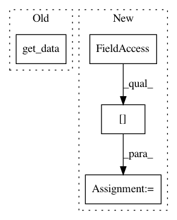

e6a8a482f15803b24fc4bda6e2a0bd001ca77c87,data.py,,read_subject_folder,#,60
Before Change
t1c_image = read_image(os.path.join(folder, "T1c.nii.gz"), image_shape=image_shape, crop=crop)
truth_image = read_image(os.path.join(folder, "truth.nii.gz"), image_shape=image_shape,
interpolation="nearest", crop=crop)
return np.asarray([t1_image.get_data(), t1c_image.get_data(), flair_image.get_data(), truth_image.get_data()])
def read_image(in_file, image_shape, interpolation="continuous", crop=None):
After Change
def read_subject_folder(folder, image_shape, crop=None):
data_list = list()
for modality in config["training_modalities"]:
data_list.append(read_image(os.path.join(folder, modality + ".nii.gz"), image_shape=image_shape,
crop=crop)).get_data()
data_list.append(read_image(os.path.join(folder, "truth.nii.gz"), image_shape=image_shape, interpolation="nearest",
crop=crop))
return np.asarray(data_list)
In pattern: SUPERPATTERN
Frequency: 3
Non-data size: 4
Instances
Project Name: ellisdg/3DUnetCNN
Commit Name: e6a8a482f15803b24fc4bda6e2a0bd001ca77c87
Time: 2017-04-07
Author: david.ellis@unmc.edu
File Name: data.py
Class Name:
Method Name: read_subject_folder
Project Name: data61/python-paillier
Commit Name: 1bcbc90debe300740369b1151b3f1b8523289f91
Time: 2018-06-26
Author: wilko.henecka@data61.csiro.au
File Name: examples/federated_learning_with_encryption.py
Class Name:
Method Name: federated_learning
Project Name: nilearn/nilearn
Commit Name: f5d882c106aa2202d03ead930f7af2ee5d612b4c
Time: 2019-04-18
Author: jerome-alexis.chevalier@inria.fr
File Name: nilearn/regions/rena_clustering.py
Class Name:
Method Name: weighted_connectivity_graph